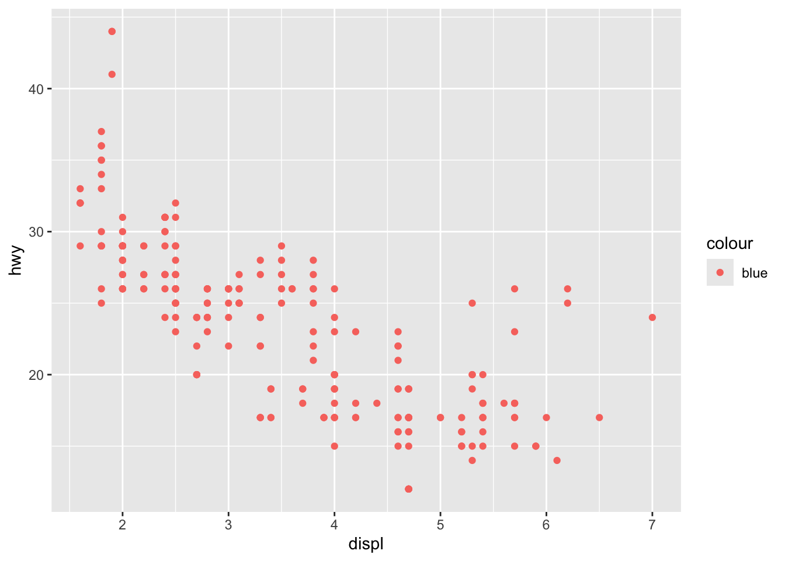

## code
# # A tibble: 8 × 4
# rate rank state total
# <dbl> <dbl> <chr> <dbl>
# 1 0.320 51 Vermont 2
# 2 0.380 50 New Hampshire 5
# 3 0.887 43 Wyoming 5
# 4 0.515 49 Hawaii 7
# 5 0.828 44 Maine 11
# 6 0.766 46 Idaho 12
# 7 0.796 45 Utah 22
# 8 0.940 42 Oregon 36Homework 2: Data Visualization and Data Wrangling
Spring 2025 MATH/COSC 3570 Introduction to Data Science by Dr. Cheng-Han Yu
1 Data Wrangling and Tidying
You use R and Python to do the following problems. You write R (Python) code for the problems starting with [R] ([Python]).
1.1 Murders
Import the data set murders.
[R] Use the pipe operator
|>and the dplyr functionsmutate(),filter(),select(), andarrange()to get the following data output. Call the data setdf.The filtering conditions are
regionin “Northeast” or “West”rate = total / population * 100000is less than 1.
The new variable
rankis based onrate. The highest rate is ranked 1st. [Hint:] Use the functionrank().
- [Python] Use Python methods
query(),filter(), andsort_values()to do Problem 1.
import numpy as np
import pandas as pd
## code- [R] With
df, usecontains()to select column variables whose name contains the string “at”. Then order the data byratedecreasingly.
## code- [Python] With
df, use argumentlike=infilter()to pick column variables whose name contains the string “at”. Then order the data byratedecreasingly.
## code- [R] Back to
murders. Group the data byregion, then usesummarize()to compute the average, median, and standard deviation ofpopulation. Call the column namesavg,med, andstdev.
## code- [Python] Back to
murders. Group the data byregion, then useagg()to compute the average, median, and standard deviation ofpopulation. Call the column namesavg,med, andstdev.
## code1.2 Baseball
The following baseball data are from the Lahman package.
The Batting data frame contains the offensive statistics for all players for many years:
Rows: 113,799
Columns: 22
$ playerID <chr> "aardsda01", "aardsda01", "aardsda01", "aardsda01", "aardsda0…
$ yearID <int> 2004, 2006, 2007, 2008, 2009, 2010, 2012, 2013, 2015, 1954, 1…
$ stint <int> 1, 1, 1, 1, 1, 1, 1, 1, 1, 1, 1, 1, 1, 1, 1, 1, 1, 1, 1, 1, 1…
$ teamID <fct> SFN, CHN, CHA, BOS, SEA, SEA, NYA, NYN, ATL, ML1, ML1, ML1, M…
$ lgID <fct> NL, NL, AL, AL, AL, AL, AL, NL, NL, NL, NL, NL, NL, NL, NL, N…
$ G <int> 11, 45, 25, 47, 73, 53, 1, 43, 33, 122, 153, 153, 151, 153, 1…
$ AB <int> 0, 2, 0, 1, 0, 0, 0, 0, 1, 468, 602, 609, 615, 601, 629, 590,…
$ R <int> 0, 0, 0, 0, 0, 0, 0, 0, 0, 58, 105, 106, 118, 109, 116, 102, …
$ H <int> 0, 0, 0, 0, 0, 0, 0, 0, 0, 131, 189, 200, 198, 196, 223, 172,…
$ X2B <int> 0, 0, 0, 0, 0, 0, 0, 0, 0, 27, 37, 34, 27, 34, 46, 20, 39, 28…
$ X3B <int> 0, 0, 0, 0, 0, 0, 0, 0, 0, 6, 9, 14, 6, 4, 7, 11, 10, 6, 4, 2…
$ HR <int> 0, 0, 0, 0, 0, 0, 0, 0, 0, 13, 27, 26, 44, 30, 39, 40, 34, 45…
$ RBI <int> 0, 0, 0, 0, 0, 0, 0, 0, 0, 69, 106, 92, 132, 95, 123, 126, 12…
$ SB <int> 0, 0, 0, 0, 0, 0, 0, 0, 0, 2, 3, 2, 1, 4, 8, 16, 21, 15, 31, …
$ CS <int> 0, 0, 0, 0, 0, 0, 0, 0, 0, 2, 1, 4, 1, 1, 0, 7, 9, 7, 5, 4, 4…
$ BB <int> 0, 0, 0, 0, 0, 0, 0, 0, 0, 28, 49, 37, 57, 59, 51, 60, 56, 66…
$ SO <int> 0, 0, 0, 1, 0, 0, 0, 0, 1, 39, 61, 54, 58, 49, 54, 63, 64, 73…
$ IBB <int> 0, 0, 0, 0, 0, 0, 0, 0, 0, NA, 5, 6, 15, 16, 17, 13, 20, 14, …
$ HBP <int> 0, 0, 0, 0, 0, 0, 0, 0, 0, 3, 3, 2, 0, 1, 4, 2, 2, 3, 0, 0, 1…
$ SH <int> 0, 1, 0, 0, 0, 0, 0, 0, 0, 6, 7, 5, 0, 0, 0, 0, 1, 0, 0, 0, 0…
$ SF <int> 0, 0, 0, 0, 0, 0, 0, 0, 0, 4, 4, 7, 3, 3, 9, 12, 9, 6, 5, 2, …
$ GIDP <int> 0, 0, 0, 0, 0, 0, 0, 0, 0, 13, 20, 21, 13, 21, 19, 8, 16, 14,…- [R] Use
Battingdata to obtain the top 10 player observations that hit the most home runs (in descending order) in 2023. Call the data settop10, make it as a tibble and print it out.
## code- [Python] Import the data
Batting.csv. UseBattingdata to obtain the top 10 player observations that hit the most home runs (in descending order) in 2023. Call the data settop10and print it out.
## codeBut who are these players? In the top10 data, we see IDs, but names. The player names are in the People data set:
Rows: 21,010
Columns: 26
$ playerID <chr> "aardsda01", "aaronha01", "aaronto01", "aasedo01", "abada…
$ birthYear <int> 1981, 1934, 1939, 1954, 1972, 1985, 1850, 1877, 1869, 186…
$ birthMonth <int> 12, 2, 8, 9, 8, 12, 11, 4, 11, 10, 9, 3, 10, 2, 8, 9, 6, …
$ birthDay <int> 27, 5, 5, 8, 25, 17, 4, 15, 11, 14, 20, 16, 22, 16, 17, 1…
$ birthCity <chr> "Denver", "Mobile", "Mobile", "Orange", "Palm Beach", "La…
$ birthCountry <chr> "USA", "USA", "USA", "USA", "USA", "D.R.", "USA", "USA", …
$ birthState <chr> "CO", "AL", "AL", "CA", "FL", "La Romana", "PA", "PA", "V…
$ deathYear <int> NA, 2021, 1984, NA, NA, NA, 1905, 1957, 1962, 1926, NA, 1…
$ deathMonth <int> NA, 1, 8, NA, NA, NA, 5, 1, 6, 4, NA, 2, 6, NA, NA, NA, N…
$ deathDay <int> NA, 22, 16, NA, NA, NA, 17, 6, 11, 27, NA, 13, 11, NA, NA…
$ deathCountry <chr> NA, "USA", "USA", NA, NA, NA, "USA", "USA", "USA", "USA",…
$ deathState <chr> NA, "GA", "GA", NA, NA, NA, "NJ", "FL", "VT", "CA", NA, "…
$ deathCity <chr> NA, "Atlanta", "Atlanta", NA, NA, NA, "Pemberton", "Fort …
$ nameFirst <chr> "David", "Hank", "Tommie", "Don", "Andy", "Fernando", "Jo…
$ nameLast <chr> "Aardsma", "Aaron", "Aaron", "Aase", "Abad", "Abad", "Aba…
$ nameGiven <chr> "David Allan", "Henry Louis", "Tommie Lee", "Donald Willi…
$ weight <int> 215, 180, 190, 190, 184, 235, 192, 170, 175, 169, 220, 19…
$ height <int> 75, 72, 75, 75, 73, 74, 72, 71, 71, 68, 74, 71, 70, 78, 7…
$ bats <fct> R, R, R, R, L, L, R, R, R, L, R, R, R, R, R, L, R, L, L, …
$ throws <fct> R, R, R, R, L, L, R, R, R, L, R, R, R, R, L, L, R, L, R, …
$ debut <chr> "2004-04-06", "1954-04-13", "1962-04-10", "1977-07-26", "…
$ bbrefID <chr> "aardsda01", "aaronha01", "aaronto01", "aasedo01", "abada…
$ finalGame <chr> "2015-08-23", "1976-10-03", "1971-09-26", "1990-10-03", "…
$ retroID <chr> "aardd001", "aaroh101", "aarot101", "aased001", "abada001…
$ deathDate <date> NA, 2021-01-22, 1984-08-16, NA, NA, NA, 1905-05-17, 1957…
$ birthDate <date> 1981-12-27, 1934-02-05, 1939-08-05, 1954-09-08, 1972-08-…We can see column names nameFirst and nameLast.
- [R] Use
left_join()to create a table of the top home run hitters. The data table should have variables playerID, nameFirst, nameLast, and HR. Overwrite the objecttop10with this new table, and print it out.
## code- [Python] Import the data
People.csv. Usemerge()to create a table of the top home run hitters. The data table should have variables playerID, nameFirst, nameLast, and HR. Overwrite the objecttop10with this new table, and print it out.
## code- [R] Use the
Fieldingdata frame to add each player’s position to the datatop10. You filterFieldingfor the year 2023 first, then useright_join(). This time show nameFirst, nameLast, teamID, HR, and POS. Make sure the data are ordered byHRdecreasingly.
## code- [Python] Import the data
Fielding.csv. Use it to add each player’s position to the datatop10. You queryFieldingfor the year 2023 first, then usemerge(). This time show nameFirst, nameLast, teamID, HR, and POS. Make sure the data are ordered byHRdecreasingly.
## code1.3 Pivoting
co2_wide <- data.frame(matrix(co2, ncol = 12, byrow = TRUE)) |>
setNames(1:12) |>
mutate(year = as.character(1959:1997))- [R] Use the
pivot_longer()function to makeco2_widetidy. The pivoted columns are1to12. Call the column with the CO2 measurementsco2and call the month columnmonth. Call the resulting objectco2_tidy. Print it out.
## code- [Python] Import
co2_wide.csv. Generate the data asco2_tidy.
## code2 Data Visualization
In this section all the plots should be generated using ggplot2 with R.
2.1 murders
Use murders to make plots.
- Create a scatter plot of total murders (x-axis) versus population sizes (y-axis) using the pipe operator
|>that the murders data set is on the left to|>.
## code- Generate the plot below using
labelandcoloraesthetics inaes()and a geometry layergeom_label(). Save the ggplot object asp. Here, we add abbreviation as the label, and make the labels’ color be determined by the state’s region.
## code- Use the object
pand
- Change both axes to be in the \(\log_{10}\) scale using
scale_x_log10()andscale_y_log10() - Add a title “Gun murder data”
- Use the wall street journal theme in ggthemes.
## code2.2 mpg
Use mpg to make plots.
- What’s gone wrong with this code? Why are the points not blue? Change it so that the points are colored in blue.
mpg |> ggplot(mapping = aes(x = displ, y = hwy, colour = "blue")) +
geom_point()
- Generate the bar chart below.
## code
- Complete the code to generate the boxplot below. Note that
x = classandy = hwy, so the coordinates need to be flipped.
## code- Generate the histogram below with density scale. Map
yto the internal variable..density..(after_stat(density)) to show density values. Put the legend inside the plot atc(0.9, 0.15). (check ?theme help page)
## code- Generate the scatter plot below.
## code